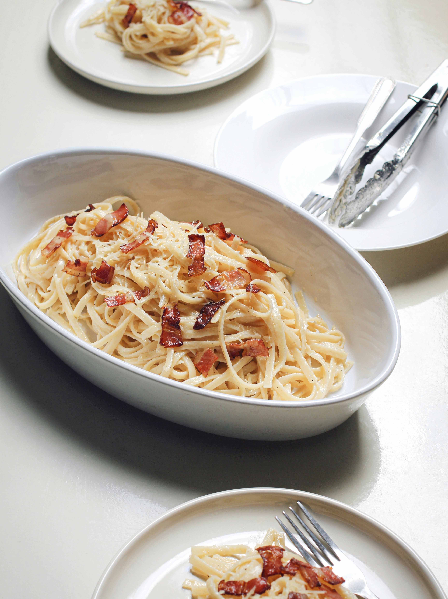

Fettuccine Alfredo

Fettuccine Alfredo is a rich and classic pasta dish made with fettuccine noodles in a creamy sauce of butter, Parmeasan cheese, and often heavy cream.
Originating in Rome, the dish has a simple, traditional version of just pasta, butter, and cheese, while the Americanized version is a recher, cream-based sauce that can include additions like chicken, broccoli, or shrimp.
Ingredients:
- 24 ounces dry fettuccine pasta
- 1 cup butter
- 3/4 pint heavy cream
- Salt and pepper to taste
- 1 dash garlic salt
- 3/4 cup grated Romano cheese
- 1/2 cup grated Parmesan cheese
Steps
- Gather all ingredients.
- Bring a large pot of lightly salted water to a boil. Add fettuccine pasta and cook for 8 to 10 minutes or until al dente; drain.
- Melt butter into cream in a large saucepan over low heat; add salt, pepper, and garlic salt.
- Increase the heat to medium; stir in grated Romano and Parmesan cheese until melted and sauce has thickened.
- Add cooked pasta to sauce and toss until thoroughly coated; serve immediately.
Home